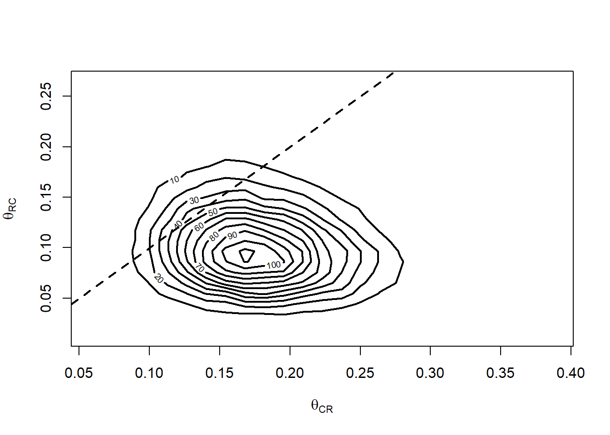

6 Testes de hipóteses
6.1 Testes baseados na teoria da decisão
6.1.1 A Função de Perda 0-1
Considere que \(X_1,\ldots,X_n\) é uma amostra do modelo \(F(.|\theta)\). Seja \(H_0:\theta\in\Theta_0\) a hipótese nula.
Um teste de hipóteses é uma regra \(\varphi(x)\) que recebe o valor 1 se a hipótese \(H_0\) é aceita e 0 em caso contrário.
Em relação à natureza da hipótese, observe que \[I(\theta\in\Theta_0)=\left\{\begin{array}{ll}1,&\hbox{ se }H_0\hbox{ é verdadeira}\\0,&\hbox{ se }H_0\hbox{ é falsa}\end{array}\right..\]
Novamente, considere a função de perda quadrática:
\[ \mathcal{L}(\theta,\varphi)=(\varphi(x)-I(\theta\in\Theta_0))^2.\] Definida deste modo, esta função também é denominada Função de Perda 0-1, uma vez que ela assume o valor 0 quando uma decisão correta é tomada e 1 caso contrário.
A esperança a posteriori desta função de perda é
\[E_{\theta|X}(\mathcal{L}(\theta,\varphi))=\int \left(\phi(x)- I(\theta\in\Theta_0)\right)^2 f(\theta|x)d\theta\]
e o estimador de Bayes é o valor de \(\varphi\) que minimiza a esperança acima. Como \(\varphi\) é uma indicadora, teremos duas situações:
- Se \(\phi(x)=0\), então
\[\begin{align}E_{\theta|X}(\mathcal{L}(\theta,\varphi))&=\int I(\theta\in\Theta_0)^2 f(\theta|x)d\theta\\&=\int I(\theta\in\Theta_0) f(\theta|x)d\theta\\&=\int_{\Theta_0 }f(\theta|x)d\theta=P(\theta\in\Theta_0|x)\end{align}\]
- Se \(\phi(x)=1\), então
\[\begin{align}E_{\theta|X}(\mathcal{L}(\theta,\varphi))&=\int (1-I(\theta\in\Theta_0)^2 f(\theta|x)d\theta\\&=\int I(\theta\in\Theta_0^c) f(\theta|x)d\theta\\&=\int_{\Theta_0^c }f(\theta|x)d\theta=P(\theta\notin\Theta_0|x)\end{align}\]
Deste modo, se \(P(\theta\in\Theta_0|x)>P(\theta\in\Theta_0^c|x)\), temos que \(\phi(\boldsymbol{x})=1\) é a decisão que minimiza a perda a posteriori, ou seja, aceitamos \(H_0\). Em caso contrário, rejeitamos \(H_0\).
Example 6.1 Fast food
Uma cadeia de fast food deseja saber se vale a pena trocar seus freezers tradicionais, que mantém a carne entre -\(17^o\)C e \(-9^oC\) por um com uma nova tecnologia (e mais cara!) que mantém a temperatura consistentemente em \(-17^oC\). Para tomar essa decisão, 32 bifes foram armazenados por 8 meses, sendo 16 bifes colocados no freezer tradicional e 16 no novo. Em seguida, um chefe preparou os 32 bifes de maneira idêntica e 16 clientes foram escolhidos ao acaso para avaliar o sabor dos bifes. Cada cliente recebeu um bife de cada freezer, mas a prova foi realizada às cegas.
Podemos considerar a variável \(Y_i=1\) se o \(i\)-ésimo cliente preferiu o bife armazenado no freezer mais caro e \(Y_i=0\) em caso contrário. Deste modo, \(Y_1,\ldots,Y_{16}|\theta\sim\hbox{Bernoulli}(\theta)\). Claramente, estamos interessados em testar \(H_0:\theta>1/2\).
Considere as seguintes prioris:
A distribuiação a priori Beta(.5,.5) dá mais massa para valores extremos, o que poderia favorecer a hipótese \(H_0\). A priori Beta(1,1) é aquela que parece não dar qualquer preferência. Por último, a priori Beta(2,2) pode ser vista como uma leve resistência à rejeitar que os dois armazenamentos são iguais.
Dos 16 clientes, 13 preferiram os bifes que foram armazenados com a tecnologia mais cara. Como as três prioris acima são casos particulares da distribuição Beta\((a,b)\), decidiremos sobre \(H_0\) calculando
\[P(\theta>1/2|\textbf{y})=\int_0^{1/2}\frac{\theta^{13+a-1}(1-\theta)^{3+b-1}}{B(13+a,3+b)}\]
que pode ser facilmente obtida com o comando pbeta(.5,13+a,3+b, lower.tail =F) Temos os seguintes resultados:
| Priori | \(P(H_0|\textbf{y})\) |
|---|---|
| Beta(.5,.5) | 0,995 |
| Uniforme | 0,993 |
| Beta(2,2) | 0,990 |
Considerando as prioris acima, a probabilidade a posteriori da hipótese nula é de pelo menos 0,99, o que nos leva a concluir que o sabor da carne é melhor preservado no freezer com alta tecnologia
6.1.2 A Função de Perda a-b
Suponha que \(P(\theta\in\Theta_0|\boldsymbol{x})=0,51\). Segundo a Função de Perda 0-1, deveríamos aceitar \(H_0\), uma vez que
\[P(\theta\in\Theta_0|\boldsymbol{x})=0,51>0,49=P(\theta\in\Theta_0^c|\boldsymbol{x})\]
Isto ocorre porque a perda associada ao erro no teste de hipóteses é igual para qualquer decisão. Podemos associar valores diferentes, reforçando que um erro é mais sério que o outro.
Considere que rejeitar \(H_0\) quando ela é verdadeira (erro tipo I) gera uma perda \(a\), enquanto que aceitar \(H_0\) quando ela é falsa (erro tipo II) gera uma perda \(b\). Para o erro mais grave, associamos um valor maior para a perda. A função de perda respectiva é denominada Perda \(a-b\) e é dada por
\[\mathcal{L}(\theta,\varphi)=\left\{\begin{array}{l}0,\hbox{ se }\varphi(x)=I(\theta\in\Theta_0)\\ a,\hbox{ se }\varphi(x)=0\hbox{ e }\theta\in\Theta_0\\b,\hbox{ se }\varphi(x)=1\hbox{ e }\theta\notin\Theta_0\end{array}\right.\]
A média a posteriori dessa função de perda é
\[E_{\theta|\boldsymbol{x}}(\mathcal{L}(\theta,\varphi))=a\int_{\Theta_0}I(\varphi(x)=0)f(\theta|x)d\theta+b\int_{\Theta_0^c}I(\varphi(x)=1)f(\theta|x)d\theta\]
Se \(\varphi(x)=1\), teremos \[E_{\theta|x}(\mathcal{L}(\theta,\varphi))=b\int_{\Theta_0^c}I(\varphi(x)=1)f(\theta|\boldsymbol{x})d\theta=bP(\theta\in\Theta_0^c|x)\]
Se \(\varphi(x)=0\) teremos \[E_{\theta|x}(\mathcal{L}(\theta,\varphi))=a\int_{\Theta_0}I(\varphi(x)=0)f(\theta|x)d\theta=aP(\theta\in\Theta_0|x)\] logo:
Se \(bP(\theta\in\Theta_0^c|x)>aP(\theta\in\Theta_0|x)\) então a decisão minimiza a perda a posteriori é \(\varphi(\boldsymbol{x})=0\), ou seja, rejeitamos \(H_0\).
Se \(bP(\theta\in\Theta_0^c|x)<aP(\theta\in\Theta_0|x)\) então a decisão minimiza a perda a posteriori é \(\varphi(\boldsymbol{x})=1\), ou seja, aceitamos \(H_0\).
Na prática, aceitamos \(H_0\) se \[P(\theta\in\Theta_0|\boldsymbol{x})>\frac{b}{b+a}\]
Observe que, diferente do ponto de vista frequentista, estamos interessados em aceitar a hipótese \(H_0\). Deste modo, o erro tipo II é o mais preocupante, o que implica em \(b>a\). Na prática, fixamos um valor para \(b/(a+b)\), como 0,95 ou 0,99 e comparamos com \(P(\theta\in\Theta_0|\boldsymbol{x})\) para decidir se aceitamos \(H_0\).
Example 6.2 Mudança de opinião
Durante a eleição presidencial americana de 1980 um estudo foi conduzido para determinar se um debate televisionado foi capaz de mudar as preferências dos telespectadores pelos candidatos. Foram selecionados 75 adultos aleatoriamente e sua preferência entre os dois candidatos foi registrada. Após a conclusão do detabe, foi perguntado para as mesmas 75 pessoas a sua preferência entre os dois candidatos. Os resultados estão sumariados abaixo.
\[\begin{array}{c|c|c}\hline \text{Preferência antes } & \text{Preferência depois} & \text{Resultado} \\ \text{do debate} & \text{do debate} & \\ \hline \text{Carter} & \text{Carter} & 28 \\ \text{Carter} & \text{Reagan} & 13 \\ \text{Reagan} & \text{Reagan} & 27 \\ \text{Reagan} & \text{Carter} & 7 \\ \hline \end{array}\]
Neste exemplo, vamos testar se os dois candidatos foram igualmente capazes de mudar a opinião dos eleitores.
Sabemos que 20 eleitores mudaram de opinição
\(\theta_{CC}\): a probabilidade do indivíduo preferir o candidato Carter antes de depois do debate
\(\theta_{RR}\): a probabilidade do indivíduo preferir o candidato Reagan antes de depois do debate
\(\theta_{CR}\): a probabilidade do indivíduo preferir o candidato Carter e depois mudar para o Reagan.
\(\theta_{RC}\): a probabilidade do indivíduo preferir o candidato Reagan e depois mudar para o Carter.
A função de verossimilhança para \(\boldsymbol{\theta}=(\theta_{CC},\theta_{CR},\theta_{RC},\theta_{RR})\) é
\[L(\boldsymbol{\theta})\propto \theta_{CC}^{28}\theta_{CR}^{13}\theta_{RR}^{27}\theta_{RC}^{7}.\]
Considerando a priori \(\boldsymbol{\theta}\sim\hbox{Dirichlet}(1,1,1,1)\), teremos a posteriori
\[\boldsymbol{\theta}\sim\hbox{Dirichlet}(29,14,28,8),\]
Estamos interessados nas probabilidades sobre mudança de opinião, ou seja, em \(\theta_{CR}\) e \(\theta_{RC}\), cujas posterioris são \[\begin{align} \theta_{CR}&\sim\hbox{Beta}(14,65)\\ \theta_{RC}&\sim\hbox{Beta}(7,68) \end{align}\]
Abaixo, apresentamos as posterioris de \(\theta_{CR}\) e \(\theta_{RC}\). Pode-se observar que o candidato Reagan parece ter certa vantagem.
curve(dbeta(x,14,65), ylim=c(0,15), xlim=c(0,.5), xlab= 'Probabilidade de mudança', ylab='Densidade a posteriori', lwd = 2)
curve(dbeta(x,7,68), add = T, lwd = 2, lty = 2)
legend('topright',c('Mudança em favor do Reagan', 'Mudança em favor do Carter'), lwd=2, lty=1:2, bty='n')Vamos testar se o debate do candidato Reagan foi mais eficaz para provocar a mudança de opinião, ou seja, \(H:\theta_{RC}<\theta_{CR}\).
require(extraDistr)Carregando pacotes exigidos: extraDistrB <- 20000
theta <- rdirichlet(B, c(29,14,28,8))
thetaCR <- theta[,2]
thetaRC <- theta[,4]
mean(thetaRC < thetaCR)[1] 0.9071Não há evidência forte o suficiente para aceitar a superioridade do Reagan para a mudança de opinião. Abaixo, mostramos o gráfico estimado para a posteriori de \(\theta_{CR},\theta_{RC}\).
require(MASS)Carregando pacotes exigidos: MASScontour(kde2d(thetaCR,thetaRC), xlab=expression(theta[CR]),ylab=expression(theta[RC]), lwd = 2)
abline(0,1,lty=2, lwd = 2)
6.2 Testes utilizando modelos
Considere novamente o problema dos freezers, da seção anterior. Note que a teoria desenvolvida acima não consegue testar \(H_0:\theta=1/2\), uma vez que este evento possui probabilidade nula a priori.
Para contornar este problema, suponha que existem dois modelos concorrentes:
Modelo \(M_0\): \(y_i\sim\hbox{Bernoulli}(1/2)\)
Modelo \(M_1:\)
\[\begin{align} y_i|\theta&\sim\hbox{Bernoulli}(\theta),\\ \theta&\sim\hbox{Uniforme}(0,1)\end{align}\]
Seja \(M_0\) o evento no qual o modelo \(M_0\) é o verdadeiro gerador da amostra. Observe que \[f(y_1,\ldots,y_{16}|M_0)=\prod_{i=1}^{16}f(y_i|M_0)=\left(\frac{1}{2}\right)^{16}\]
Já para o modelo \(M_1\), observe que
\[\begin{align}f(y_1,\ldots,y_{16}|M_1)&= \int_0^1 f(y_1,\ldots,y_{16}|\theta)f(\theta)d\theta\\ &=\int_0^1 \prod_{i=1}^{16}f(y_i|\theta)f(\theta)d\theta\\ &=\int_0^1 \prod_{i=1}^{16}\theta^{y_i}(1-\theta)^{1-y_i}d\theta\\ &=\int_0^1\theta^{\sum_{i=1}^{16}y_i}(1-\theta)^{16-\sum_{i=1}^{16}y_i}d\theta=B\left(\sum_{i=1}^{16}y_i+1,16-\sum_{i=1}^{16}y_i+1\right),\end{align}\] onde \(B(.,.)\) é a função beta.
Sejam \(P(M_0)\) e \(P(M_1)=1-P(M_0)\) as probabilidades a priori dos modelos \(M_0\) e \(M_1\). Então, a probabilidade a posteriori do modelo \(M_0\) é dada por
\[P(M_0|y_1,\ldots,y_{16})=\frac{\left(\frac{1}{2}\right)^{16}P(M_0)}{\left(\frac{1}{2}\right)^{16}P(M_0)+B\left(\sum_{i=1}^{16}y_i+1,16-\sum_{i=1}^{16}y_i+1\right)P(M_1)}\] Ainda considerando o exemplo anterior, assumindo \(P(M_0)=P(M_1)=1/2\) e lembrando que \(\sum_i y_i=13\), tem-se
\[P(M_0|y_1,\ldots,y_{16})=\frac{\left(\frac{1}{2}\right)^{17}}{\left(\frac{1}{2}\right)^{17}+B\left(14,4\right)\frac{1}{2}}\approx0,1268,\] o que nos leva a rejeitar \(H_0\).
Caso geral.
Para a amostra \(x_1,\ldots,x_n\), sejam \(M_1,\ldots,M_k\) \(k\) modelos paramétricos. Sejam \(\boldsymbol{\theta}_1,\ldots,\boldsymbol{\theta}_k\), e \(f(\boldsymbol{\theta}_1),\ldots,f(\boldsymbol{\theta}_k)\) seus respectivos parâmetros e prioris. Para determinar o modelo mais adequado:
Atribua os valores a priori para \(P(M_1),\ldots,P(M_k)\)
Para \(j=1,\ldots,k\), calcule \[f(x_1,\ldots,x_n|M_j)=\int f(x_1,\ldots,x_n|\theta_j)f_j(\theta_j)d\theta_j\]
Compute
\[P(M_j|x_1,\ldots,x_n)=\frac{f(x_1,\ldots,x_n|M_j)P(M_j)}{\sum_{i=1}^k f(x_1,\ldots,x_n|M_i)P(M_i)}\]
- Considere como adequado o modelo com maior probabilidade a posteriori
Distribuição preditiva para o caso Bernoulli multivariado
A distribuição \[f(x)=\int L(\theta)f(\theta)d\theta=E(L(\theta))\] é denominada preditiva. Se \(\boldsymbol{X}|\boldsymbol{\theta}\sim\hbox{Bernoulli}(\theta_1,\ldots,\theta_k)\) e considerando o modelo conjugado \(\boldsymbol{\theta}\sim\hbox{Dirichlet}(\theta_1,\ldots,\theta_k)\), teremos que
\[\begin{align} f(x)&=\int_{\mathcal{S}^k}\prod_{j=1}^k\theta_j^{n_j}\frac{\Gamma(\sum_{j=1}^k a_j)}{\prod_{j=1}^k \Gamma(a_j)}\prod_{j=1}^k \theta_j^{a_j-1}d\boldsymbol{\theta}\\ &=\frac{\Gamma(\sum_{j=1}^k a_j)}{\prod_{j=1}^k \Gamma(a_j)}\int_{\mathcal{S}^k}\prod_{j=1}^k\theta_j^{n_j+a_j-1}d\boldsymbol{\theta}\\ &=\frac{\Gamma(\sum_{j=1}^k a_j)}{\Gamma(n+\sum_{j=1}^k a_j)}\prod_{j=1}^k\frac{\Gamma(a_j+n_j)}{\Gamma(a_j)} \end{align}\]
Além disso, se \(a_1=\cdots=a_k=1\), então
\[f(x)=\frac{(k-1)!}{(n+k-1)!}\prod_{j=1}^k n_j!\]
Example 6.3 Imagem corporal
Considere novamente os dados sobre imagem corporal em escolares entre 16 e 17 anos, vistos no capítulo anterior e reproduzidos novamente abaixo.
vamos analisar o recorte dos resultados para alunos entre 16 e 17 anos, diferenciando entre os sexos. As frequências estão sumariadas na tabela abaixo.
\[\begin{array}{c|ccc|c}\hline &\hbox{Satisfeito} & \hbox{Insatisfeito por excesso} & \hbox{Insatisfeito por magreza} &\hbox{Total}\\ \hline \hbox{Masculino} & 24 & 10 & 24 & 58 \\ \hbox{Feminino} & 14 & 22 & 24 & 60 \\ \hline \end{array} \]
Anteriormente, assumimos que as probabilidades entre os sexos deveriam ser diferentes. Denotamos por \(\alpha_S,\alpha_E,\alpha_M\) a probabilidade de um indivíduo do sexo masculino ser classificado como Satisfeito, Insatisfeito por Excesso e Insatisfeito por Magreza. Também denotamos por \(\beta_S,\beta_E,\beta_M\) as mesmas probabilidades para o sexo feminino. Por último, Utilizamos a priori Dirichlet(1,1,1) para ambos os sexos. Vamos denotar esse modelo por \(M_1\).
Seja \(x=(24,10,24)\) as informações registradas para o sexo masculino e \(y=(14,22,24)\) as informações para o sexo feminino. Então
\[\begin{align} f(x,y|M_1)&=f(x|M_1)f(y|M_1)\\ &=\left[\frac{2!}{60!}24!10!24!\right]\left[\frac{2!}{62!}14!22!24!\right] \end{align}\]
Considere agora o modelo \(M_2\), no qual não há diferença entre os sexos. Nesse caso, \(x\) e \(y\) são provenientes do mesmo modelo, com probabilidades \(\gamma_S,\gamma_E,\gamma_M\), respectivamente. Utilizando a priori Dirichlet(1,1,1), teremos
\[\begin{align}f(x,y|M_2)&=\frac{2!}{120!}38!32!48!\end{align}\]
Vamos assumir a priori que \(P(M_1)=P(M_2)=1/2\). Então, vamos testar se não há diferença na percepção da imagem corporal entre os sexos:
\[P(M_2|x,y)=\frac{P(x,y|M_2)}{P(x,y|M_1)+P(x,y|M_2)}\]
Vamos realizar esse cálculo no R:
- \(P(x,y|M_1)\):
# logaritmo da probabilidade:
lprobA <- lfactorial(2)-lfactorial(60)+sum(lfactorial(c(24,10,24)))
lprobB <- lfactorial(2)-lfactorial(62)+sum(lfactorial(c(14,22,24)))
# probabilidade
m1 <- exp(lprobA +lprobB)- \(P(x,y|M_2)\):
# logaritmo da probabilidade:
lprob <- lfactorial(2)-lfactorial(120)+sum( lfactorial(c(38,32,48)))
# probabilidade
m2 <- exp(lprob)- \(P(M_2|x,y)\)
m2 / (m1 + m2)[1] 0.2824985Portanto, ficamos com o modelo que assume diferença entre os sexos.
6.3 O Fator de Bayes
Anteriormente, vimos que para uma coleção de \(k\) modelos competidores, o modelo \(M_j\) é preferível aos demais se \[P(M_j|x)>P(M_i|x).\] para todo \(i\neq j\). Observe que
\[\begin{align}P(M_j|x)&=\frac{f(x|M_j)P(M_j)}{\sum_{i=1}^kf(x|M_j)P(M_j)}\\&=P(M_j)\left[P(M_j)+\sum_{i\neq j}\frac{f(x|M_i)}{f(x|M_j)}P(M_i)\right]^{-1}\\ &=P(M_j)\left[P(M_j)+\sum_{i\neq j}B_{ij}(x)P(M_i)\right]^{-1}\end{align}\] onde a quantidade \[B_{ij}(x)=\frac{f(x|M_i)}{f(x|M_j)},\] denominada Fator de Bayes, sumariza a informação da amostra para relacionar os modelo \(M_i\) e \(M_j\).
Para auxiliar na interpretação do Fator de Bayes, considere o caso com apenas dois modelos onde \(P(M_1)=P(M_2)\). Então \[\begin{align}P(M_1|x)&= &=\left[1+B_{21}(x)\right]^{-1}\end{align}\] Observe que, quanto maior for o valor \(B_{21}(x)\), menor será a evidência a favor do modelo \(M_1\).
A escala de Jeffreys pode ser útil para tomada de decisão:
\[\begin{array}{cl}\hline B_{01}(x) & \text{Interpretação}\\ \hline >100 & \text{Evidência decisiva para } H_0 \\ 30-100 & \text{Evidência muito forte para } H_0 \\ 10-30 & \text{Evidência forte para } H_0 \\ 3-10 & \text{Evidência substancial para } H_0 \\ 1-3 & \text{Evidência fraca para } H_0 \\ 1/3-1 & \text{Evidência fraca contra } H_0 \\ 1/10-1/3 & \text{Evidência substancial contra } H_0 \\ 1/30-1/10 & \text{Evidência forte contra } H_0 \\ 1/100-1/30 & \text{Evidência muito forte contra } H_0 \\ <1/100 & \text{Evidência decisiva contra } H_0 \\ \hline \end{array}\]
Note que, se \(M_0\) é equivalente à \(\theta_0\) e \(M_1\) é equivalente à \(\theta=\theta_1\), então o Fator de Bayes se torna a estatística do teste de Neyman-Pearson
\[B_{01}(x)=\frac{f(x|\theta_0)}{f(x|\theta_1)}.\]
Example 6.4 Imagem corporal
Considerando \(M_1\) como o modelo no qual as percepções sobre o corpo são provenientes de populações distintas e \(M_2\) como o modelo no qual não havia diferença entre os grupos delimitados pelo sexo, obtivemos \(P(M_2|x,y)\approx 0,28\). Utilizando os mesmos comandos em R, teremos que o Fator de Bayes \(B_{21}\) é dado por
m2/m1[1] 0.3937254que gera evidência fraca em favor de \(M_1\).
Example 6.5 Pesquisa Quaest
Uma pesquisa foi realizada entre os dias 27 e 31 de março de 2025 e ouviu 2.024 eleitores presencialmente. Uma das perguntas foi: O quão frustrado você está com o governo Lula hoje? As opções eram 1) Muito frustrado, (2) Pouco frustrado, (3), Nada frustrado e (4) Não sabe/Não respondeu.
| Categoria | Percentual de respostas | Número de pessoas (N=2024) |
|---|---|---|
| Muito frustrado | 36% | 729 |
| Pouco frustrado | 31% | 627 |
| Nada frustrado | 30% | 607 |
| Não sabe/Não responderam | 3% | 61 |
Observe que esta é uma pergunta tendenciosa, com uma opção neutra e duas negativas.
Desconsiderando a categoria dos que não responderam, seja \(\boldsymbol{\theta}=(\theta_M,\theta_P,\theta_N)\) as probabilidades do indivíduo estar muito, pouco ou nada frustrado, respectivamente.
Considere inicialmente o modelo, denotado por \(M_1\), no qual os entrevistados respondem esta pergunta ao acaso, ou seja \(\theta_M=\theta_P=\theta_N=1/3\). Então
\[P(M_1|\text{dados})=\left(\frac{1}{3}\right)^{2024}\]
Em seguida considere o modelo \(M_2\), no qual a verossimilhança é dada por \[L(\boldsymbol{\theta})\propto \theta_M^{729}\theta_P^{627}\theta_N^{607}.\] Escolhendo a priori \(\boldsymbol{\theta}\sim\hbox{Dirichlet}(1,1,1)\), teremos
\[P(\text{Dados}|M_2)=\frac{2}{2026!}(729!)(627!)(607!)\]
O fator de Bayes \(B_{21}\) é dado por
# logP(dados|M2)
logPm2 <- -2024*log(3)
# logP(dados|M1)
logPm1 <- log(2)+sum(lfactorial( c(729,627,607)))-lfactorial(1965)
# Fator de Bayes
exp( logPm2 - logPm1)[1] 1.02445e-29O fator de Bayes é muito pequeno, indicando que a hipótese de que as três probabilidades são iguais não é verdadeira.
6.4 Exercícios
6.4.1 Mudança de opinião sobre vacinação
Uma pesquisadora está investigando a eficácia de uma nova campanha de saúde pública para aumentar a adesão à vacinação contra a gripe em uma determinada comunidade. Ela seleciona uma amostra de 100 indivíduos e registra se cada um tomou a vacina na temporada anterior (Antes da Campanha) e na temporada atual (Depois da Campanha). Os resultados estão apresentado abaixo.
| Vacinado Depois | Não Vacinado Depois | Total | |
|---|---|---|---|
| Vacinado Antes | 15 | 5 | 20 |
| Não Vacinado Antes | 40 | 40 | 80 |
| Total | 55 | 45 | 100 |
Verifique se a campanha teve um efeito na adesão à vacinação.